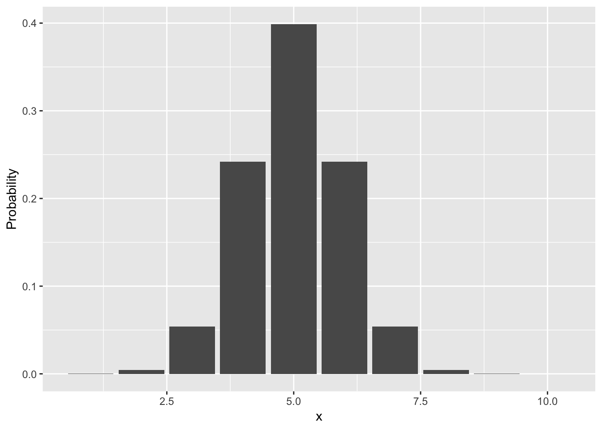

Chapter 4 Normal distribution
4.1 Probability distributions
A probability distribution is a mathematical function that provides the probabilities of occurrence of different possible outcomes. Probability distributions are generally divided into two classes. A discrete probability distribution applies to discrete random variables such as the probability of being alive or dead as in the binomial distribution or the probability of a given number of deaths occurring in a fixed time interval as in the Poisson distribution. A continuous probability distribution applies to continuous random variables such as the measure of hematocrit on any given day. The most common continuous probability distribution is the normal or Gaussian distribution and is defined by the following probability-density function: \[f(x)=\frac{1}{\sqrt{2\pi\sigma}}e^{-\frac{1}{2\sigma^{2}}(x-\mu)^{2}}\] where \({x}\) is a continuous random variable, \({\sigma^{2}}\) is the variance, and \({\mu}\) is the mean. Properties of the normal distribution include:
- The curve is symmetric about \({\mu}\)
- The entire shape of the normal distribution is determined by the two parameters \({\mu}\) and \({\sigma^{2}}\)
- The area under the curve between any two points \({a}\) and \({b}\) is equal to the probability that the random variable \({x}\) falls between \({a}\) and \({b}\)
- The area under the entire normal density function is always equal to 1
- The probability that the random variable \({x}\) falls between ±1 standard deviation is approximately 68%, ±2 standard deviations is 95%, and ±2.5 standard deviations is 99%.
# Calculate the probabilities of a normally distributed random variable
library(ggplot2)
p = dnorm(1:10, mean = 5, sd = 1)
p [1] 1.338302e-04 4.431848e-03 5.399097e-02 2.419707e-01 3.989423e-01
[6] 2.419707e-01 5.399097e-02 4.431848e-03 1.338302e-04 1.486720e-06ggplot(data.frame(Probability = p, x = 1:10), aes(x = x, y = Probability)) +
geom_bar(stat = "identity")
4.2 Central limit theorem
The central limit theorem establishes that the distribution of sample means of an independent random variable tends toward a normal distribution even if the original variables themselves are not normally distributed. For example, suppose that a sample is obtained containing a large number of observations, each observation being randomly generated in a way that does not depend on the values of the other observations, and that the arithmetic mean of the observed values is computed. If this procedure is performed many times, the central limit theorem says that the computed values of the mean will be distributed according to a normal distribution.
4.3 Test for normality
The Shapiro-Wilk test of normality tests if the population is normally distributed. If the p-value is less than a chosen alpha, then the null hypothesis is rejected and there is evidence that the data tested are not from a normally distributed population. If the p-value is greater than a chosen alpha, then the data may be normally distributed and one cannot reject the hypothesis that the sample comes from a population which has a normal distribution.
# Import dataset
load("docs/Example-data.Rda")
# Shapiro-Wilk test of normality
shapiro.test(data$Age)
Shapiro-Wilk normality test
data: data$Age
W = 0.93058, p-value = 0.15844.4 Quantile-quantile plot
Quantile-quantile (Q-Q) plot is a probability plot, which is a graphical method for comparing two probability distributions by plotting their quantiles against each other. If the two distributions being compared are similar, the points in the Q–Q plot will approximately lie on the line y = x. If the distributions are linearly related, the points in the Q–Q plot will approximately lie on a line, but not necessarily on the line y = x.
# Q-Q plot
library(ggplot2)
ggplot(data, aes(sample = Age)) +
stat_qq() +
stat_qq_line()
4.5 Confidence interval
The interval of plausible estimates of the sample mean is known as the confidence interval. Generally, the interval encompasses 95% of all such sample means. It is calculated from Student’s \({t}\) distribution which is a family of distributions indexed by a parameter referred to as the degrees of freedom (\({n-1}\)). The upper and lower bounds of the interval are calculated as follows when the standard deviation of the population is unknown: \[{(\bar{x}-t_{n-1,1-\alpha/2}s/\sqrt{n}, \bar{x}+t_{n-1,1-\alpha/2}s/\sqrt{n})}\] where \(t_{n-1,1-\alpha/2}\) is the the percentage points of the \({t}\) distribution for a given degree of freedom (\({n-1}\)) and percentile (\(1-\alpha/2\)). The length of the confidence interval is therefore proportional to the sample size (\({n}\)), standard deviation (\({s}\)), and confidence (\(\alpha\)):
- As the sample size increases, the length of the confidence interval decreases
- As the standard deviation increases, the length of the confidence interval increases
- As the confidence desired increases, the length of the confidence interval increases
# Determine the confidence interval of the mean from a t distriubtion
alpha = 0.05
mean = mean(data$Age)
sd = sd(data$Age)
n = length(data$Age)
CI = qt(p = 1-alpha/2, df = n-1)*sd/sqrt(n)
c(mean - CI, mean + CI)[1] 54.93078 64.06922